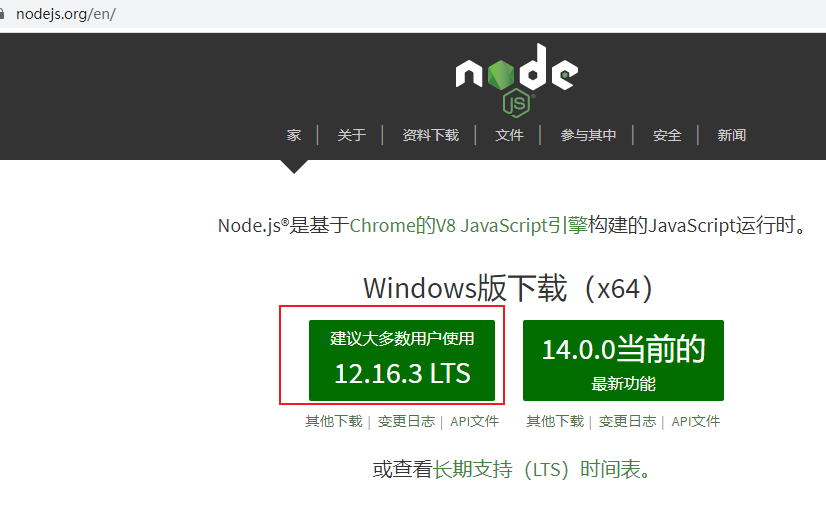
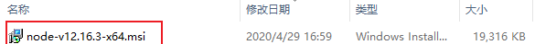
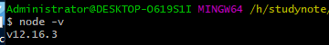
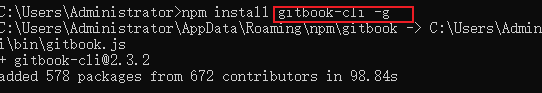
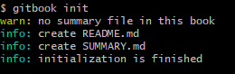
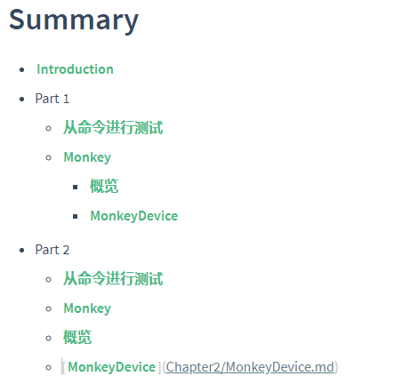

快速使用gitbook
安装
1、下载地址：https://nodejs.org/en/

2、下载完成的样子

3、点击安装，右键安装（一路安装）
在cmd窗口，输入node -v

将会看到版本号！
4、安装GItBook，命令行输入下述命令
npm install gitbook-cli -g
#如果是mac系统linux安装出错可能需要权限执行以下代码
sudo npm install gitbook-cli -g

安装速度有点慢，需要等一会儿！安装示例图：
5、查看是否安装成功，命令行输入下述命令，出现版本号则已安装，否则无
gitbook -V(注意这里的v是大写)
GitBook创建以及预览使用
一、gitbook init
1、进入到指定的文件夹执行cmd命令，初始化文件夹，会自动生成两个必要的文件README.md和SUMMARY.md

- README.md:书的介绍文字，如前言，简介，在章节中也可作为章节的简介
- SUMMARY.md：定制书籍的章节结构和顺序。
2、在gitbook的使用文件夹下面增加其他章节的文件，文件目录如下：
3、GitBook使用SUMMARY.md文件作为书记的目录结构，可以用来制作书籍目录。

4、预览
a、执行命令git server,gitbook会启动一个4000端口用于预览

b、第二种预览方式，运行gitbook build命令狗会在书籍文件夹中生成一个_book文件夹的内容即为生成的html文件，生成网页不需要开启服务器。
注意：
当执行gitbook serve后保存找不到fontsettings.js
一般的降低版本
其他解决办法：先执行一次gitbook build,在执行gitbook serve就不会报错了！
安装插件
安装插件只需要在书籍目录下增加book.json文件，例如增加折叠目录的插件，需要在book.json内增加下面代码：
{
"plugins": ["expandable-chapters-small"],
"pluginsConfig": {
"expandable-chapters-small":{}
}
}
然后终端执行install来安装插件即可。
gitbook install